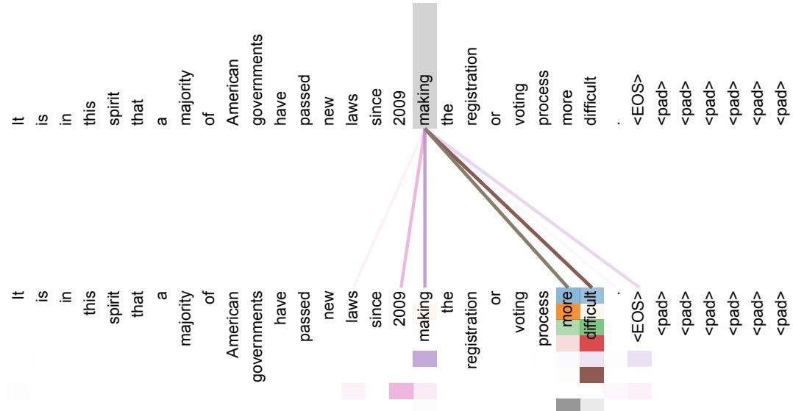
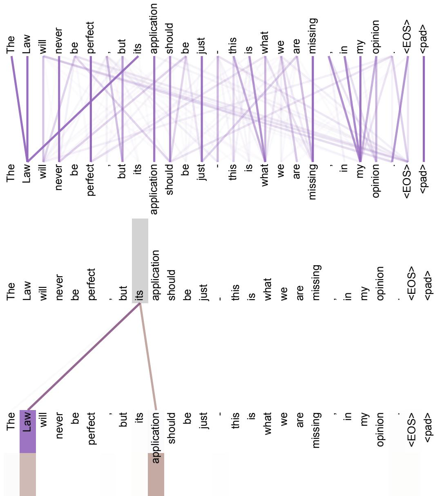
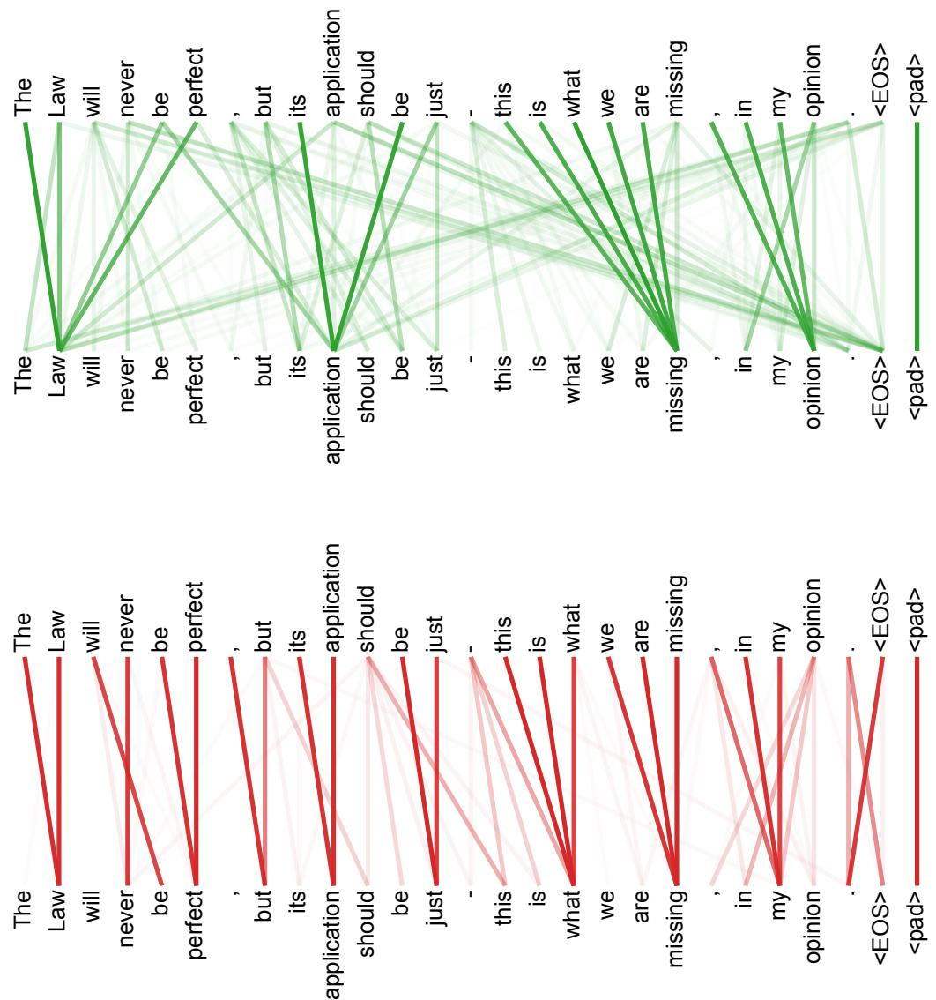

Attention Is All You Need 图表详解#
图像对象 ：该图展示的是论文《Attention Is All You Need》中的 Figure 1: The Transformer - model architecture ，即 Transformer 编码器-解码器整体架构图 。
模块
位置
功能
是否重复堆叠
Encoder 左侧
将输入序列编码为上下文表示
N×
Decoder 右侧
基于已生成输出和 Encoder 表示生成目标序列
N×
Softmax + Linear 右上方
将 Decoder 输出映射为词表概率
否
Positional Encoding 底部输入处
注入序列位置信息
否
Embedding 最底部
将 token 转换为向量表示
否
核心视觉信息 ：图中左侧是 Encoder stack ，右侧是 Decoder stack 。二者都由多个相同结构的层堆叠而成，图中用 N× 表示重复堆叠，论文默认设置为 N = 6 。
步骤
模块
说明
1
Inputs 输入源语言 token 序列
2
Input Embedding 将离散 token 映射为连续向量
3
Positional Encoding 与 embedding 相加，提供位置信息
4
Encoder Stack 经过多层 self-attention 与 feed-forward 处理
5
Encoder Output 输出供 Decoder 的 encoder-decoder attention 使用
子层顺序
子层名称
作用
1
Multi-Head Attention 对输入序列内部所有位置进行 self-attention
2
Add & Norm 残差连接 + Layer Normalization
3
Feed Forward 对每个位置独立应用前馈网络
4
Add & Norm 再次进行残差连接 + Layer Normalization
Encoder 的关键特征 ：
Multi-Head Attention 允许每个输入位置直接关注其他所有输入位置。Feed Forward 是 position-wise 的，即每个位置共享同一组参数但独立计算。每个子层外都有 residual connection ，图中用绕回箭头表示。
每个残差连接之后都有 Add & Norm ，对应公式：LayerNorm(x + Sublayer(x)) 。
Encoder 不使用 RNN 或 CNN ，完全基于 attention 与前馈网络。
步骤
模块
说明
1
Outputs shifted right Decoder 输入为右移后的目标序列
2
Output Embedding 将目标 token 映射为向量
3
Positional Encoding 加入位置信息
4
Decoder Stack 逐层生成上下文表示
5
Linear 映射到词表维度
6
Softmax 得到 Output Probabilities
子层顺序
子层名称
作用
1
Masked Multi-Head Attention 对已生成目标序列进行 masked self-attention
2
Add & Norm 残差连接 + Layer Normalization
3
Multi-Head Attention 对 Encoder 输出进行 encoder-decoder attention
4
Add & Norm 残差连接 + Layer Normalization
5
Feed Forward position-wise 前馈网络
6
Add & Norm 残差连接 + Layer Normalization
Decoder 的关键特征 ：
Masked Multi-Head Attention 防止当前位置看到未来 token。该 mask 保证模型满足 auto-regressive 生成条件。
第二个 Multi-Head Attention 接收来自 Encoder 的输出，完成源序列到目标序列的对齐。
Decoder 比 Encoder 多一个 attention 子层，即 encoder-decoder attention 。
右侧顶部的 Linear + Softmax 将 Decoder 最终表示转换为词表上的概率分布。
图中模块
类型
Query 来源
Key / Value 来源
功能
Encoder 中的 Multi-Head Attention
Encoder self-attention Encoder 前一层
Encoder 前一层
建模输入序列内部依赖
Decoder 底部的 Masked Multi-Head Attention
Decoder masked self-attention Decoder 前一层
Decoder 前一层
建模已生成目标序列依赖
Decoder 中部的 Multi-Head Attention
Encoder-decoder attention Decoder 前一层
Encoder 输出
让 Decoder 关注源序列信息
箭头含义分析 ：
自下而上的主箭头表示 数据前向传播路径 。
Encoder 到 Decoder 的横向箭头表示 Encoder 输出被 Decoder attention 读取 。
每个子层旁边的弯曲箭头表示 residual connection 。
Positional Encoding 与 Embedding 之间的加号表示二者进行 element-wise addition 。
Decoder 输出顶部箭头表示经过 Linear 和 Softmax 后生成最终概率。
Positional Encoding 的作用 ：
Transformer 没有 recurrence 和 convolution，因此天然不包含顺序信息。
图中在 Input Embedding 和 Output Embedding 后加入 Positional Encoding 。
该操作让模型区分 token 的顺序位置。
论文中使用的是 sinusoidal positional encoding，也可替换为 learned positional embedding。
Embedding 与 Positional Encoding 的关系 ：
组件
维度
操作
Input Embedding d_model
token 向量化
Output Embedding d_model
目标 token 向量化
Positional Encoding d_model
提供位置信息
Embedding + Positional Encoding d_model
相加后输入 Encoder / Decoder
Add & Norm 的设计意义 ：
Add 表示 residual connection，有助于梯度传播。Norm 表示 Layer Normalization，提高训练稳定性。每个 attention 子层和 feed-forward 子层后都使用该结构。
这是 Transformer 能够堆叠多层的重要原因之一。
Feed Forward 模块作用 ：
图中的 Feed Forward 对每个位置独立处理。
它不负责跨位置交互，跨位置交互主要由 Multi-Head Attention 完成。
论文中对应公式为：FFN(x) = max(0, xW₁ + b₁)W₂ + b₂ 。
默认维度为 d_model = 512 ，内部隐藏层维度为 d_ff = 2048 。
Masked Multi-Head Attention 的重要性 ：
Decoder 生成第 i 个 token 时，只能依赖第 i 个位置之前的 token。
图中 Outputs shifted right 和 Masked Multi-Head Attention 共同保证这一点。
mask 会将非法未来位置的 attention score 设为 −∞ ，softmax 后权重为 0。
对比项
Encoder
Decoder
输入
源序列 embedding + position
右移目标序列 embedding + position
self-attention
普通 self-attention
masked self-attention
是否访问 Encoder 输出
否
是
子层数量
2 个主要子层
3 个主要子层
输出用途
提供源序列表示
生成目标词概率
该图体现的 Transformer 核心创新 ：
完全移除 RNN 。完全移除 CNN 。使用 self-attention 建模序列内部依赖。
使用 multi-head attention 从多个子空间并行捕获关系。
通过 positional encoding 弥补无 recurrence 带来的位置信息缺失。
通过高度并行结构显著提升训练效率。
路径
说明
Inputs → Encoder 源序列被编码为上下文表示
Outputs shifted right → Decoder 目标端历史 token 作为 Decoder 输入
Encoder → Decoder Decoder 通过 encoder-decoder attention 读取源序列
Decoder → Linear → Softmax 输出词表概率，预测下一个 token
论文语境下的意义 ：
该图是 Transformer 架构的总览图，也是后续几乎所有 Transformer 变体的基础。
BERT 主要继承了其中的 Encoder stack 。
GPT 主要继承了其中的 Decoder masked self-attention stack 。
T5、BART 等模型则继续使用类似的 Encoder-Decoder 框架。
简要结论 ：
这张图展示了 Transformer 如何用 Multi-Head Attention + Feed Forward + Add & Norm + Positional Encoding 构成完整的序列到序列模型。
左侧 Encoder 负责理解输入，右侧 Decoder 负责条件生成。
整个架构的关键优势是 并行化强、长距离依赖路径短、表达能力高 。
图像整体内容
该图是 Transformer 论文中的 Figure 2 ，展示了 Transformer 的核心计算模块：
左侧：Scaled Dot-Product Attention
右侧：Multi-Head Attention
图的核心目的是说明：Transformer 如何通过 Query / Key / Value 机制计算注意力，以及如何将多个注意力头并行组合，形成更强的表示能力。
区域
模块名称
核心作用
左侧
Scaled Dot-Product Attention 单个 attention head 的具体计算流程
右侧
Multi-Head Attention 多个 attention head 并行运行，并将结果拼接融合
输入
Q, K, V Query、Key、Value，是 attention 的三类输入表示
输出
Attention 输出向量
对 Value 的加权组合，权重由 Query 与 Key 的相似度决定
左侧：Scaled Dot-Product Attention 的结构分析
左图展示了单个注意力头的完整计算链路。
输入为：
计算流程从下到上依次为：
Q 与 K 进入 MatMul 得到相似度矩阵 QKᵀ
经过 Scale
可选经过 Mask
经过 SoftMax
得到 attention weights
attention weights 与 V 再次 MatMul
输出加权后的表示
步骤
图中模块
数学形式
作用
1
MatMul QKᵀ 计算 Query 与 Key 的相似度
2
Scale QKᵀ / √dₖ 缩放点积，避免数值过大
3
Mask opt. 将非法位置置为 −∞
用于 decoder 中阻止看到未来 token
4
SoftMax softmax(QKᵀ / √dₖ)
将相似度转为概率分布
5
MatMul softmax(...)V
对 Value 做加权求和
6
输出
Attention(Q,K,V)
得到上下文相关表示
Scaled Dot-Product Attention 的核心公式
公式
含义
Attention(Q, K, V) = softmax(QKᵀ / √dₖ)V 使用 Query 和 Key 计算权重，再对 Value 加权求和
Q、K、V 的含义
Query ：当前位置想要查询什么信息。Key ：每个位置提供的可匹配索引。Value ：每个位置真正携带的信息内容。Attention 的本质是：
用 Q 去匹配所有 K
根据匹配程度得到权重
用权重对所有 V 求和
符号
英文名称
直观解释
在图中的位置
Q Query
查询向量
左图底部左侧输入
K Key
键向量
左图底部中间输入
V Value
值向量
左图底部右侧输入，直接连到最后 MatMul
dₖ Key dimension
Key 的维度
Scale 中使用
√dₖ Scaling factor
缩放因子
防止 softmax 饱和
为什么需要 Scale
当 dₖ 较大时，QKᵀ 的数值可能变得很大。
如果直接进入 SoftMax ，可能导致分布过于尖锐，使梯度变小。
因此论文使用 1 / √dₖ 缩放点积结果。
该设计是 Transformer 稳定训练的重要细节。
问题
如果不 Scale
使用 Scale 后
点积数值
可能过大
数值范围更稳定
SoftMax 输出
容易极端化
分布更平滑
梯度
可能很小
更利于训练
训练稳定性
较差
更好
Mask opt. 的作用
图中的 Mask opt. 表示可选 masking 操作。
在 Transformer 的 decoder self-attention 中，Mask 非常关键。
它用于防止当前位置关注未来位置。
例如预测第 i 个 token 时，只允许模型看到第 1 到第 i 个位置，不能看到第 i+1 之后的 token。
这保证了 decoder 的 auto-regressive 性质。
使用场景
是否需要 Mask
原因
Encoder self-attention 否
输入序列可双向关注
Decoder self-attention 是
防止看到未来 token
Encoder-decoder attention 通常否
Decoder 可关注完整 source sequence
右侧：Multi-Head Attention 的结构分析
右图展示了多个 Scaled Dot-Product Attention 并行运行的机制。
输入同样是 Q、K、V 。
但在进入 attention 之前，Q、K、V 会分别经过多个不同的 Linear 投影。
每组 Linear 投影对应一个 attention head。
多个 head 并行计算后，将结果 Concat 。
最后再经过一个 Linear 层，得到最终输出。
阶段
图中模块
作用
输入
V, K, Q 原始 Value、Key、Query
线性投影
Linear 将 Q/K/V 投影到不同子空间
并行注意力
Scaled Dot-Product Attention × h 多个 head 同时计算 attention
拼接
Concat 合并所有 heads 的输出
输出映射
Linear 融合多头信息，恢复到 d_model 维度
Multi-Head Attention 的数学表达
公式
含义
MultiHead(Q,K,V) = Concat(head₁,...,headₕ)Wᴼ 拼接多个 head 后再线性变换
headᵢ = Attention(QWᵢQ, KWᵢK, VWᵢV) 每个 head 使用独立投影后的 Q/K/V 计算 attention
图中 h 的含义
右图中标注的 h 表示 attention head 的数量。
在原论文的 base Transformer 中：
h = 8 d_model = 512 dₖ = dᵥ = 64
也就是说，每个 head 在 64 维子空间中计算 attention，8 个 head 合并后回到 512 维。
参数
Transformer base 设置
含义
d_model 512
模型主隐藏维度
h 8
attention head 数量
dₖ 64
每个 head 的 Key 维度
dᵥ 64
每个 head 的 Value 维度
h × dᵥ 512
多头拼接后的维度
为什么需要 Multi-Head Attention
单个 attention head 只能在一个表示子空间中计算注意力。
Multi-Head Attention 允许模型在多个子空间中同时关注不同信息。不同 head 可以学习不同关系，例如：
语法依赖
长距离依赖
指代关系
局部短语结构
位置关系
这也是 Transformer 能够替代 RNN 和 CNN 的关键原因之一。
单头 Attention
多头 Attention
只从一个子空间建模关系
从多个子空间并行建模关系
表达能力有限
表达能力更强
容易将不同信息平均混合
不同 head 可分工
对复杂依赖捕获较弱
更适合捕获多类型依赖
左图与右图的关系
左图是右图中的基本单元。
右图中的每一个 attention head 本质上都是一个左图所示的 Scaled Dot-Product Attention 。
区别在于：
左图：单次 attention 计算
右图：多次 attention 并行计算，再合并输出
对比项
Scaled Dot-Product Attention
Multi-Head Attention
图中位置
左侧
右侧
计算数量
一个 attention
h 个 attention 并行
输入
Q, K, V
Q, K, V
是否有 Linear 投影
图中未显式展示
显式展示多个 Linear
输出方式
加权 Value
Concat 后再 Linear
作用层级
基础计算单元
Transformer 中实际使用的 attention 模块
该图在 Transformer 架构中的位置
Multi-Head Attention 被用于 Transformer 的三个地方：
Encoder self-attention Decoder masked self-attention Encoder-decoder attention
图中的 Mask 对应 decoder self-attention 的关键机制。
图中的多头并行对应 Transformer 高并行性的核心设计。
Transformer 模块
Q 来源
K/V 来源
是否 Mask
Encoder self-attention Encoder 上一层输出
Encoder 上一层输出
否
Decoder masked self-attention Decoder 上一层输出
Decoder 上一层输出
是
Encoder-decoder attention Decoder 上一层输出
Encoder 输出
否
视觉设计解读
左图采用垂直流水线结构，强调 attention 的顺序计算步骤。
右图采用并行叠层结构，多个浅灰色重叠模块表示多个 head 同时运行。
Concat 和最终 Linear 位于顶部，说明多头结果并非简单输出，而是需要进一步融合。Q、K、V 在右图底部均先经过 Linear ，突出不同 head 使用不同投影空间。
图像元素
视觉含义
紫色 MatMul / Attention
核心矩阵计算
绿色 SoftMax
权重归一化
黄色 Scale / Concat
数值调整或结果合并
粉色 Mask opt.
可选遮蔽机制
多个重叠模块
多头并行
顶部 Linear
输出融合
核心技术意义
该图浓缩了 Transformer 的核心创新：
用 attention 替代 recurrence
用 parallel heads 增强表示能力
用 scaled dot-product 提升计算效率与稳定性
用 masking 支持 auto-regressive decoding
相比 RNN，attention 不需要按时间步串行处理，因此更易并行。
相比 CNN，self-attention 可以用常数路径长度连接任意两个位置，更利于建模长距离依赖。
能力
RNN
CNN
Transformer Attention
并行训练
弱
强
强
长距离依赖路径
长
取决于层数和卷积核
短
全局交互
间接
需堆叠层
直接
核心操作
recurrent step
convolution
Q/K/V attention
总结
这张图展示了 Transformer 最重要的计算机制。
Scaled Dot-Product Attention 负责计算单个注意力分布。Multi-Head Attention 将多个 attention head 并行化，使模型能从不同角度捕获序列内部或输入输出之间的依赖关系。图中的 Scale、Mask、SoftMax、Concat、Linear 都是 Transformer 成功的关键组成部分。
该图可以视为理解整篇 Attention Is All You Need 的核心入口。
57e3ad00e7c57fe0dc66b468b013f2fcf447ef78a7d2ee01be8b434fe6ef0669.jpg#

图像对象 ：该图对应论文《Attention Is All You Need》附录中的 Figure 3 ，展示的是 Transformer encoder self-attention 的可视化结果。
图像核心含义 ：
该图展示了 encoder 第 5 层 / 共 6 层 中，多个 attention heads 在处理单词 “making” 时的注意力分布。
重点说明 Transformer 的 self-attention 能够捕捉句子中的 长距离依赖关系 。
图中单词 “making” 与后文 “more difficult” 之间形成明显联系，对应短语结构 “making ... more difficult” 。
位置
Token
1
It
2
is
3
in
4
this
5
spirit
6
that
7
a
8
majority
9
of
10
American
11
governments
12
have
13
passed
14
new
15
laws
16
since
17
2009
18
making
19
the
20
registration
21
of
22
voting
23
process
24
more
25
difficult
26
.
27
<EOS>
后续
<pad>
元素
含义
上方竖排文本
输入句子的 token 序列
下方竖排文本
同一句子的 token 序列，用于显示被 attention 指向的位置
灰色竖条
当前被分析的 query token：“making”
彩色连线
不同 attention heads 从 “making” 指向其他 token 的注意力
彩色方块
attention 权重强度，颜色越明显表示注意力越集中
<EOS>End of Sentence，句子结束符
<pad>Padding token，用于补齐序列长度
最重要的视觉现象 ：
多条彩色 attention 线从 “making” 发出，集中指向后文的 “more” 和 “difficult” 。
这说明模型在编码 “making” 时，并不仅依赖邻近词，而是直接关注远处与其构成语义结构的词。
该行为体现了 Transformer 的关键优势：任意两个位置之间的依赖路径长度为 O(1) 。
Attention Head 表现
可能学习到的功能
指向 “more”
捕捉比较结构中的程度副词
指向 “difficult”
捕捉 “making ... difficult” 的谓词-补足语关系
指向标点或 <EOS>
可能用于句法边界或序列结束判断
指向局部邻近词
补充局部上下文信息
多个 head 指向不同位置
体现 Multi-Head Attention 的分工机制
“laws since 2009 making the registration of voting process more difficult”
其中 “making” 是现在分词，引导结果或修饰结构。
“more difficult” 是其语义补足部分。因此，“making” → “more difficult” 是一个典型的 long-distance dependency 。
图中 attention 正好捕捉到了这一结构。
Transformer 机制
图中体现
Self-Attention “making” 可以直接关注同一句中的任意 token
Multi-Head Attention 不同颜色代表不同 heads，各自关注不同位置
Encoder Representation encoder 在生成 “making” 的表示时融合远处上下文
Long-Range Dependency Modeling 直接建立 “making” 与 “more difficult” 的联系
Parallelizable Context Aggregation 无需 RNN 顺序传播即可获得全局信息
为什么该图重要 ：
它直观证明了 Transformer 不依赖 RNN 或 CNN ，也能学习复杂句法与语义关系。
对比 RNN，长距离信息需要经过多个时间步传播；而在 Transformer 中，“making” 可以一步 attend 到 “difficult” 。
对比 CNN，如果卷积核较小，需要多层堆叠才能连接远距离 token；而 self-attention 在单层内即可完成。
图中最关键结论 ：
Transformer 的 encoder self-attention 能自动学习句法结构。 Multi-Head Attention 中的不同 heads 会自发形成分工。 模型能够捕捉非相邻 token 之间的语义依赖。 “making” 对 “more difficult” 的关注说明模型理解了结果补足结构。
与论文主张的关系 ：
论文第 4 节提出 self-attention 的优势之一是 maximum path length 为 O(1) 。
该图提供了可解释性证据：模型确实利用这种短路径机制捕捉远距离依赖。
图像支持论文结论：Attention is sufficient for sequence transduction ，即不使用 recurrence 和 convolution 也能建模复杂序列关系。
可解释性评价 ：
该图不是单纯展示权重，而是在解释模型内部行为。
它说明 attention heads 并非随机分布，而是可能对应：
因此，该图增强了 Transformer 的 interpretability 。
局限性说明 ：
attention 权重不能完全等同于因果解释。
图中只展示了特定 token “making” 的 attention，不代表整个模型的全部决策过程。
该可视化来自单层、单样本，不能直接推广为所有样本中的普遍行为。
但作为定性证据，它清楚展示了 self-attention 对长距离依赖的捕捉能力。
一句话总结 ：
这张图展示了 Transformer encoder 中多个 self-attention heads 在处理 “making” 时，自动关注远处的 “more difficult” ，说明模型能够通过 Multi-Head Self-Attention 高效捕捉长距离句法和语义依赖。

图像整体含义 ：该图是 Transformer 论文附录中的 Figure 4 ，展示了编码器第 5/6 层 encoder self-attention 中两个 attention heads 的可视化结果。论文说明认为这两个头“apparently involved in anaphora resolution”，即可能参与了指代消解 。
序列片段
文本
完整句子
The Law will never be perfect, but its application should be just - this is what we are missing, in my opinion.
关键短语
its application
潜在先行词
The Law
指代词
its
核心观察 ：图中重点展示了单词 “its” 的 attention 行为。“its” 明显将注意力集中到 “Law” 和 “application” 附近 ，这表明模型可能学到了：
被分析词
主要 attention 目标
可能语言学功能
its Law 识别 possessive pronoun 的先行词
its application 建立 possessive modifier 与被修饰名词的局部关系
its application Law / application 建模“法律的应用”这一语义结构
上半部分图像含义 ：
上半部分标注为 Full attentions for head 5 。
它展示的是 attention head 5 在整个句子上的完整 attention 分布。
每个 token 在上方和下方各出现一次，线条表示一个位置对另一个位置的 attention。
紫色线条越深、越粗，表示 attention 权重越大。
可以看到大量浅色连接覆盖全句，但其中有一些非常突出的深色连接。
这些强连接显示该 head 并不是均匀关注所有 token，而是在某些词之间形成了稀疏且明确的依赖关系 。
现象
解释
“its” 附近出现强 attention 说明该 head 对指代词非常敏感
“my” 与 “opinion” 附近也有强连接 可能捕捉 possessive pronoun 与名词之间的关系
部分词几乎垂直连接自身或邻近词 可能用于保留局部 token 信息或短距离句法依赖
跨较长距离连接存在 self-attention 能直接建立远距离依赖，无需 RNN 式逐步传播
下半部分图像含义 ：
下半部分是 Isolated attentions from just the word “its” for attention heads 5 and 6 。
它只保留了来自 “its” 这个 token 的 attention。
图中用两种颜色区分两个不同 attention heads：
紫色 ：一个 head 的 attention。棕色/灰褐色 ：另一个 head 的 attention。
这部分更清楚地说明：当模型处理 “its” 时，不同 heads 会关注不同但互补的词。
Attention head
“its” 的主要关注对象
可能作用
Head 5 Law 找到代词 its 的先行词，即 “its” 指代 “The Law”
Head 6 application 捕捉 possessive pronoun 与被修饰名词之间的局部结构
两者结合
Law + application 建立 “its application” = “the application of the Law” 的语义关系
为什么这是 anaphora resolution 的例子 ：
Anaphora resolution 指的是确定代词或指代表达所指向的实体。在句子 “but its application should be just” 中，its 是 possessive pronoun。
它的先行词不是紧邻词，而是前面的 The Law 。
图中 “its” 对 “Law” 有非常强的 attention ，说明模型可能自动学到了：
its = Law’s its application = application of the Law
这体现了 Transformer 的 self-attention 能够捕捉非局部语义依赖。
图中“sharp attention”的含义 ：
论文说明中特别指出：“Note that the attentions are very sharp for this word.”
Sharp attention 意味着 attention 权重高度集中在少数 token 上，而不是分散到整个句子。对 “its” 来说，这种 sharpness 很重要，因为代词通常需要明确找到一个或少数几个候选先行词。
图中 “its” 的 attention 几乎直接指向 Law 和 application ，因此可解释性较强。
Transformer 机制
图中体现
Self-Attention 每个 token 可以直接关注句中任意其他 token
Multi-Head Attention 不同 heads 学到不同关系，如先行词关系、局部修饰关系
Long-distance dependency “its” 可直接连接到较远处的 “Law”
Interpretability attention pattern 可视化后能观察到类似句法/语义功能
Parallel dependency modeling 不依赖 RNN 的顺序传播即可建模跨词关系
该图对论文论点的支撑 ：
论文主张 Transformer 的 self-attention 不仅计算高效，还能捕捉长距离依赖。
Figure 4 提供了直观证据：
模型能够在没有显式语法标注的情况下学习指代关系 。不同 attention heads 自动分工 。深层 encoder self-attention 可能形成语义级结构表示 。
这支持论文中关于 self-attention 可解释性的论述：某些 heads 会表现出与句法、语义结构相关的行为。
需要注意的限制 ：
该图只能说明 attention pattern 与指代关系高度相关。
它不能严格证明模型“理解”了指代消解。
attention 权重是模型内部计算的一部分，但不一定完全等价于因果解释。
因此更准确的说法是：该 attention head 显示出类似 anaphora resolution 的行为 ，而不是证明模型具备完整的人类式指代理解。
总结 ：
这张图展示了 Transformer encoder 中某些 attention heads 的可解释行为。
对单词 “its” ，模型产生了非常集中的 attention。
一个 head 强烈关注 “Law” ，可能用于寻找先行词。
另一个 head 关注 “application” ，可能用于建模 possessive phrase 的局部结构。
图像说明 Multi-Head Self-Attention 能够同时捕捉长距离语义依赖 和局部句法关系 ，是 Transformer 相比 RNN/CNN 架构的重要优势之一。
b616696f63c30ad27de5f095b0cac5975742209d1231c70057510010187c1512.jpg#

图像来源与定位
该图对应论文《Attention Is All You Need》附录中的 Figure 5 。
图注说明为：“Many of the attention heads exhibit behaviour that seems related to the structure of the sentence.”
该图展示的是 Transformer encoder self-attention 中第 5 层 / 共 6 层 的两个不同 attention heads 。
目的不是展示翻译结果，而是可视化不同 attention head 在同一句子内部学习到的结构性关联。
图像整体内容
图中包含上下两个子图：
上半部分：绿色 attention head。
下半部分：红色 attention head。
两个子图都针对同一句输入序列：
“The Law will never be perfect, but its application should be just - this is what we are missing, in my opinion. <EOS> <pad>”
每个词在图中出现两行：
上方一行表示被关注的位置，通常可理解为 key/value positions 。
下方一行表示发出 attention 的位置，通常可理解为 query positions 。
连线表示某个 token 对另一个 token 的 attention weight 。
线越粗、颜色越深，表示 attention 权重越高。
淡色线表示较弱的 attention 分布。
区域
颜色
表示内容
主要特征
上半图
绿色
一个 encoder self-attention head
连接较分散，存在明显跨词组结构关联
下半图
红色
另一个 encoder self-attention head
连线更稀疏、更尖锐，偏向局部或特定结构模式
上下两行 token
黑色文本
同一句话的 token 序列
用于展示 query token 到 key token 的关注关系
深色粗线
绿 / 红
高 attention weight
表示模型强烈关注的 token 对
浅色细线
淡绿 / 淡红
低 attention weight
表示弱相关或背景 attention
句子结构分析
输入句子可拆解为几个语义片段：
The Law will never be perfect but its application should be just this is what we are missing in my opinion
句子中包含对比关系：
Law 可能不会 perfect 。但 its application 应该是 just 。
还包含指代关系：
还包含评价性短语：
图像的重点在于：不同 attention head 似乎自动学习到了这些语法、语义或位置结构。
上半图绿色 attention head 分析
绿色 head 的连线较多，说明它不是只关注单一局部关系，而是在句子内部建立较丰富的依赖。
明显可以看到一些 token 有较强的集中关注：
Law application missing opinion <EOS>
这说明该 head 可能承担的是较复杂的结构整合功能，而不是简单的相邻词复制。
观察点
图中现象
可能含义
Law 附近连线密集多个 token 指向或经过 Law
可能捕捉主语或核心名词
application 连线明显与 its、should、just 等位置存在强关联
可能建模名词短语或语义中心
missing 出现多条强线we、are、what 等附近 token 与其关联
可能识别谓词中心或从句结构
opinion 有明显聚合in、my、opinion 形成局部关系
可能捕捉固定短语结构
<EOS> 被关注句末 token 与多个位置存在连接
可能用于边界或句子整体信息汇聚
绿色 head 的结构性行为
绿色 attention head 似乎关注的是 短语级结构 。
例如：
its application should be just 中，application、should、just 之间有明显联系。what we are missing 中，what、we、are、missing 之间出现集中连接。in my opinion 中，in、my、opinion 之间也存在较强局部模式。
这表明该 head 可能学习到：
主谓结构 名词短语结构 从句内部依赖 句末修饰短语
下半图红色 attention head 分析
红色 head 的连线明显更稀疏、更垂直、更尖锐。
很多 token 几乎关注自身或附近 token。
这种模式说明该 head 可能更多承担：
位置保持 局部对齐 token identity preservation 相邻语法关系捕捉
与绿色 head 相比，红色 head 更像是一个结构稳定器，而不是全局语义整合器。
观察点
图中现象
可能含义
多数连线接近垂直
token 多关注自身或相近位置
保留局部位置信息
will / never / be / perfect 有清晰局部线早段短语内部依赖明显
捕捉谓语链或形容词补足关系
what / missing 有强连接从句关键词之间存在直接关联
识别疑问/关系结构
my / opinion 有明显连接固定搭配内部关系突出
捕捉短语搭配
<EOS> / <pad> 有边界连线句末特殊 token 被单独处理
可能学习边界或 padding 行为
红色 head 的结构性行为
红色 head 更接近 局部句法模式识别器 。
它可能关注：
词与自身的对应关系。
词与相邻功能词的关系。
固定短语内部连接。
标点和特殊 token 的边界。
例如：
my → opinion 的连接可能表示所有格短语。what → missing 的连接可能表示从句中的语义核心。will / never / be / perfect 的局部关联可能表示动词短语结构。
维度
绿色 head
红色 head
关注范围
更全局
更局部
连线密度
较高
较低
注意力分布
较分散但有重点
更尖锐、更稀疏
可能功能
语义整合、短语结构识别
局部对齐、位置保持、短语内部关系
对长距离依赖
更明显
较弱
对局部依赖
有，但不是唯一重点
更突出
可解释性
展示跨短语结构关系
展示局部句法模式
该图体现的 Multi-Head Attention 核心思想
图像直观说明了 Multi-Head Attention 的价值：
不同 head 可以学习不同类型的关系。
某些 head 关注长距离语义依赖。
某些 head 关注局部句法结构。
某些 head 关注特殊 token 或边界信息。
如果只有单个 attention head，所有关系会被混合进一个注意力分布中，容易产生平均化问题。
多头机制允许模型在不同子空间中并行捕捉不同结构。
与论文主张的关系
论文在 Section 4 中提到，self-attention 的一个附带优势是可能带来更强的 interpretability 。
该图正是对这一点的可视化支持。
图中不同 head 展现出类似语法或语义结构的行为，说明 Transformer 并非只是进行无结构的加权平均。
它可以在训练过程中自动形成某种结构敏感性。
句子片段
可能结构
图中体现
The Law 名词短语
Law 被多次关注
will never be perfect 动词/系表结构
will、never、be、perfect 之间存在局部连接
its application 指代 + 名词短语
its、application 附近有强关系
should be just 情态动词 + 系表结构
should、be、just 有结构性连接
what we are missing 从句结构
what、we、are、missing 形成明显区域
in my opinion 介词短语 / 插入评价语
in、my、opinion 有局部集中关注
<EOS> 句子结束标记
与句末或全局信息存在连接
<pad> 填充标记
基本作为边界或占位处理
从模型内部机制角度解释
在 encoder self-attention 中，每个 token 都可以直接关注同一句中的任意 token。
因此，像 Law → application 、what → missing 、my → opinion 这样的关系不需要经过 RNN 的逐步传递。
这正是 Transformer 相比 RNN 的优势之一：
任意两个 token 的路径长度为 O(1) 。
长距离依赖可以直接建模。
attention 权重可视化后具有一定解释性。
图像显示的关键结论
不同 attention heads 学到了不同功能。 self-attention 可以捕捉句子结构，而不仅是表面词序。 某些 head 更偏向长距离语义依赖，某些 head 更偏向局部句法模式。 Multi-Head Attention 缓解了单头 attention 的信息平均化问题。 Transformer encoder 在无 recurrence、无 convolution 的情况下，仍然能够形成结构化语言表示。
需要谨慎解读的地方
attention 可视化不能完全等同于因果解释。
图中的连线表示模型内部的 attention weight，但不一定说明模型“真正理解”语法。
不同 head 的功能是从可视化中推断出来的，并非人工显式指定。
该图更适合作为 qualitative evidence ，而不是严格的定量证明。
简要总结
这张图展示了 Transformer encoder 第 5 层中两个 self-attention heads 的行为。
绿色 head 更偏向全局和短语级结构整合。
红色 head 更偏向局部对齐和固定句法模式。
图像有力支持了论文观点：Multi-Head Self-Attention 能够在不同表示子空间中自动学习多种语言结构关系 。